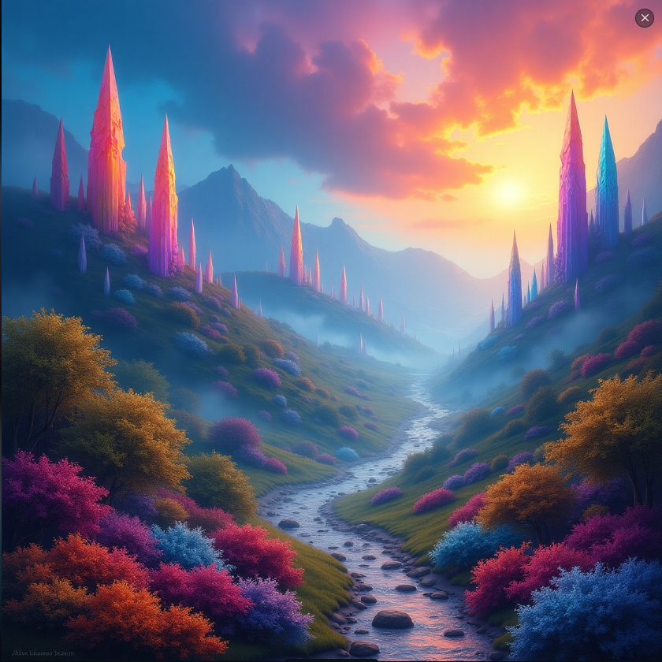

Bir zamanlar uzak bir krallıkta, her gece ay ışığıyla canlanan bir prens yaşardı...
Bir zamanlar, uzak bir diyarda Kayıp Renkler Ülkesi adında bir yer varmış. Bu ülke, her yönüyle renklerle doluymuş. Ağaçlarının yaprakları altın sarısı, gökyüzü turkuaz mavisi, denizleri mercan kırmızısıymış. Yüzyıllardır bu ülkede yaşamış insanlar, her bir rengi kutlayarak, renklerin kendilerine kattığı neşeyle huzur içinde yaşarmış. Fakat bir gün, büyük bir felaket olur. Küçük bir kız çocuğu, adı Ela, bu ülkede yaşıyormuş. Ela, renklerin en güzelini görmek için sabahları erkenden uyanıp, doğanın güzelliklerini izler, tüm gün boyunca rengarenk çiçekleri koklarmış. Fakat bir sabah, uyandığında her şey değişmişti. Ülkede hiç renk kalmamıştı. Ağaçların yaprakları griye dönmüş, gökyüzü simsiyah olmuş ve deniz, bir zamanlar parlayan mercan kırmızısından sadece solgun bir maviye dönüşmüş. Ela, gözlerine inanamazken, bir ses duymuş. Bu ses, bir kuşun ötüşüne benziyordu ama daha derin, daha bilgece bir ses. “Ela,” demiş ses, “Senin içinde kaybolmuş renkleri bulacak gücü bulacaksın. Ancak yalnızca gerçek cesaretinle bu renkleri geri getirebilirsin. Her renkten bir parça kayboldu ve her birinin kaybı, bir insanın kalbindeki sevgiye, güvene ve umuda bağlı. Bu yüzden, kalbinde kaybolan renkleri bulmalısın.” Ela, derin bir nefes almış ve yola çıkmış. İlk olarak kaybolan rengin nedenini araştırmış. Güven rengi kaybolmuştu, bu yüzden Ela, krallığın en uzak köyüne gitmiş. O köyde kimse kimseye güvenmiyor, herkes birbirinden korkuyor ve her şey gri bir renk tonuna bürünmüş. Ela, köy halkına güvenin yeniden inşa edilmesi gerektiğini anlatmış. Birbirlerine karşı nazik, dürüst ve yardımsever olmalarını istemiş. Zamanla, insanlar tekrar birbirlerine güvenmeye başlamış ve güvenin rengi, yeşil, yeniden doğmuş. Sonra Ela, sevgi rengini bulmak için yolculuğuna devam etmiş. Sevgi rengi kaybolmuştu, ve Ela, insanların birbirlerine daha az sevgi gösterdiğini fark etmiş. Bu ülkenin en büyük şehrinde, insanlar birbirlerinden uzak durmuş, kalpleri soğumuştu. Ela, halkın bir araya gelip sevdiklerine sarılmasını, birlikte gülmelerini ve yardımlaşmalarını istemiş. Yavaşça, sevgi yeniden canlanmış ve pembe rengin ışığı geri dönmüş. Ela'nın son durağı, umudun kaybolduğu bir ormandı. İnsanlar geleceğe dair hiçbir umut taşımıyorlarmış. Ela, onlara bir hikaye anlatmış, geçmişteki zorlukları aşan insanların hikayelerini paylaşmış. Bu, kalplere yeniden umut aşılamış ve umudun rengi, mor, geri gelmiş. Ela, her bir kaybolan rengi geri getirmiş ve Kayıp Renkler Ülkesi yeniden rengarenk olmuş. Ülkenin halkı, renklerin sadece doğayı değil, aynı zamanda insan ruhunu da beslediğini anlamışlar. Ela, bir gün dönüp arkasına bakarken, gökyüzünde eski haline dönmüş, parıldayan bir güneş görmüş. O günden sonra, renkler hiç kaybolmamış ve Ela, insanların kalbinde sevgi, güven ve umut ışığını her zaman taşıyacaklarına dair bir söz vermiş. Ve masal burada biter.